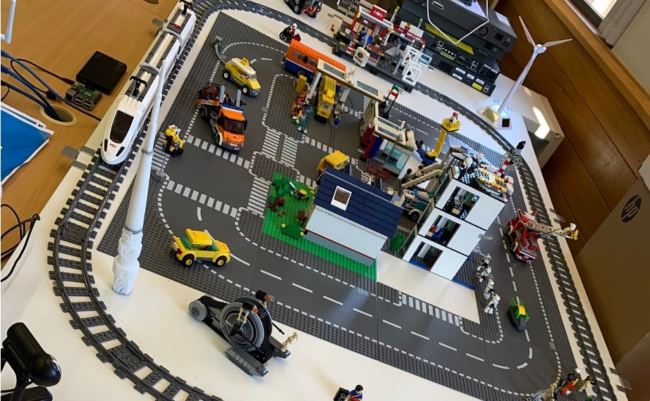

Please log into the Dashboard using the navigation above.
Authorised users only!
Include a picture as necessary.
To add an image to this page, see the HTML code below.
You will need to upload the image to the SPIFFS partition for it to work.

<img src="img.jpg">
You will also need to add an additional route to serve the image.
server.on("/img.jpg", HTTP_GET, [](AsyncWebServerRequest * request) {
logEvent("route: /img.jpg");
request->send(SPIFFS, "/img.jpg", "image/jpeg");
});